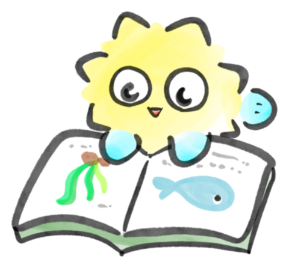

AQUARIUM PASSPORT

すいぞくかんパスポート
0 / 190館
MAPの「⬜行ったらチェック」と連動してるよ。スタンプをタップしても押せる🐟
🏅 メダルコレクション
条件をクリアするとメダルがもらえるよ。タップすると「あと何館か」が見られる！
📖 スタンプ帳
行った水族館のスタンプが押されていくよ。空いている枠は「これから行ける楽しみ」🐟
← MAPにもどる
条件をクリアするとメダルがもらえるよ。タップすると「あと何館か」が見られる！
行った水族館のスタンプが押されていくよ。空いている枠は「これから行ける楽しみ」🐟
← MAPにもどる